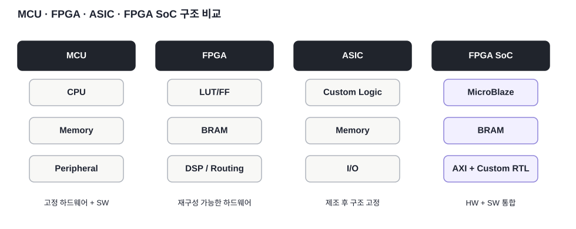
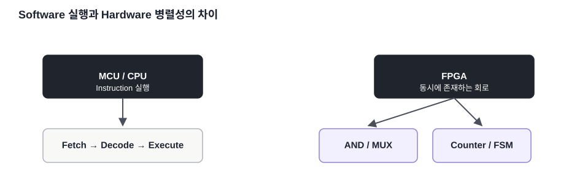

핵심 질문
왜 MCU와 FPGA는 같은 코드 실행 장치가 아닌가?
FPGA / SoC 개념 · 02
CPU 중심의 MCU, 재구성 가능한 FPGA, 주문형 ASIC, FPGA 내부 Soft CPU 기반 SoC를 구조와 설계 관점에서 비교합니다.
왜 MCU와 FPGA는 같은 코드 실행 장치가 아닌가?
고정 CPU 구조와 재구성 논리 구조를 분리해서 이해합니다.
MicroBlaze를 넣으면 FPGA 내부에 CPU 시스템을 구성할 수 있습니다.

MCU(Microcontroller Unit, 마이크로컨트롤러)는 CPU, Memory, Timer, UART 같은 Peripheral이 이미 칩 내부에 고정되어 있고 소프트웨어가 그 하드웨어를 사용합니다. FPGA는 반대로 LUT, FF, BRAM, DSP, Routing을 이용해 사용자가 원하는 디지털 회로를 직접 구성합니다.

ASIC(Application-Specific Integrated Circuit, 특정 용도 전용 집적회로)은 목표 회로를 실제 반도체 공정으로 제조합니다. 제조 후 회로 구조를 바꾸기 어렵지만 대량생산에서는 성능·전력·단가에서 유리할 수 있습니다. FPGA는 제조된 칩의 논리와 배선을 Bitstream으로 재구성하기 때문에 개발과 변경이 빠릅니다.
MicroBlaze는 FPGA Fabric에 구현하는 Soft Processor입니다. UG984에 따르면 Harvard Architecture를 사용하며 Instruction/Data 경로를 분리하고, LMB와 AXI 인터페이스를 지원합니다. Basys3 안에 MicroBlaze + BRAM + AXI Peripheral + Custom RTL을 구성하면 하나의 FPGA 내부 SoC 학습 구조를 만들 수 있습니다.
여기서 SoC라는 말은 Zynq처럼 Hard CPU가 이미 내장된 칩만 의미하지 않습니다. FPGA Fabric에 Soft CPU와 Memory·Peripheral을 통합한 구조도 SoC 설계 개념을 학습하는 데 사용할 수 있습니다.
본문의 기술 내용과 교육용 재작성 그림은 아래 공식 문서를 기준으로 검증했습니다. 원문 전체를 복제하지 않고 핵심 구조를 학습용으로 재구성했습니다.